Main Projects
🏃 Physical Activity Tracking App
This project is a web application built with React that allows users to log and view their daily physical activities. The system fetches stored records from a remote backend, allowing features like total workout time per day, among others.
Technologies and Concepts Used:
- React JS: Dynamic and modular interface with reusable components.
- React Hooks (useState, useEffect): Local state management and side effects such as API calls.
-
Fetch API:
Communication with a remote endpoint using credentials stored in
localStorage. -
Data Reduction:
Total workout time calculated using
reduceon the activity log. - Modern JavaScript (ES6+): Use of arrow functions, template literals, and destructuring for clean and efficient code.
- Modular and Responsive CSS: Component-scoped styles adapted to various devices.
Key Features:
- Automatic calculation of daily workout time.
- Filtered record visualization by date.
-
Basic authentication using
apikeyanduseridin custom headers. -
Component separation:
DailyTime,Log,Activity, etc.
Functionalities:
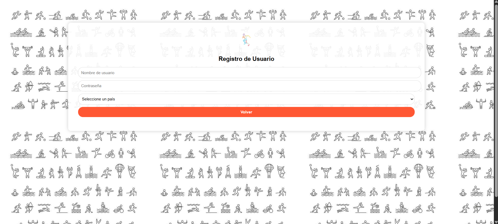
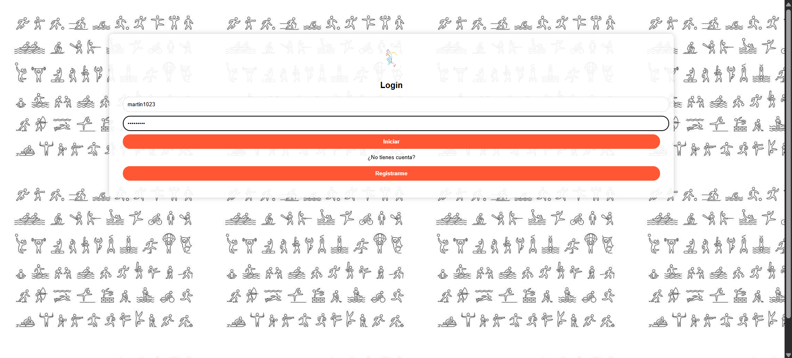
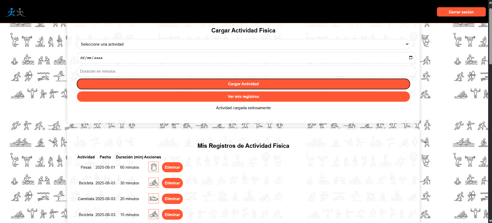
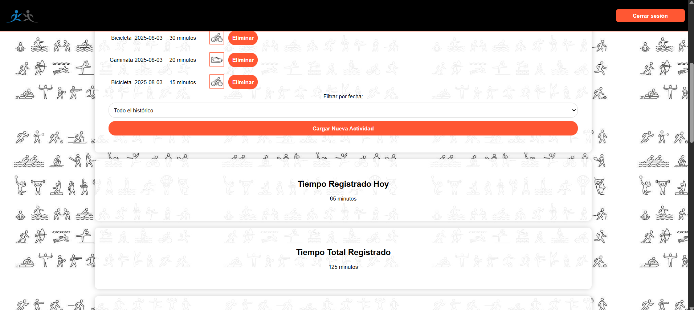
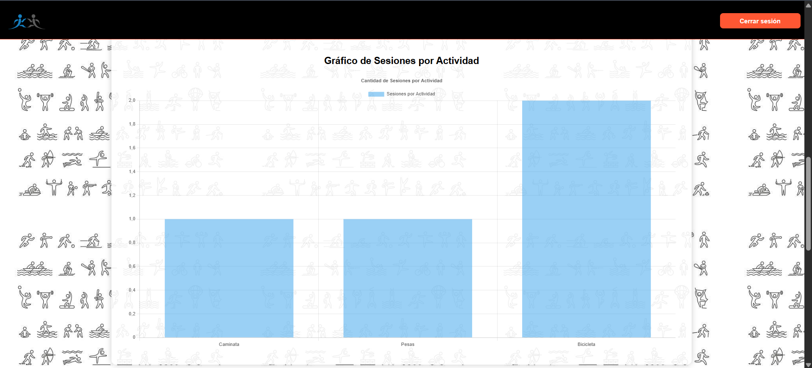
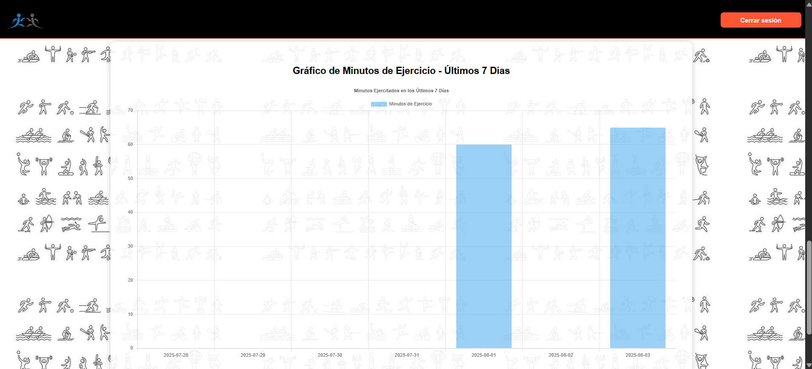
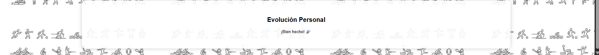
✈️ Travel and Flight Management System
This project is a Java system that manages travelers, cities, connections, and flights, with advanced search and optimal route calculation features. The backend is based on data structures like binary search trees (BST) and directed graphs.
Technologies and Concepts Used:
- Java 17: Object-oriented implementation with exception handling and validations.
- Data Structures: BSTs for efficient ordering and O(log n) lookups.
- Directed Graphs: Cities and connections modeled with flights as multi-edges.
- Dijkstra's Algorithm: Optimal route calculations based on time or cost.
- Validation: Regex for ID and email formats, and error control.
Key Features:
- Efficient search of travelers by ID or email.
- City and connection registration with duplicate checks.
- Flight management with uniqueness validation and updates.
- Optimal route calculation by time or cost, with filters for allowed flight types.
- Sorted listings of travelers by ID, email, category, or age range.
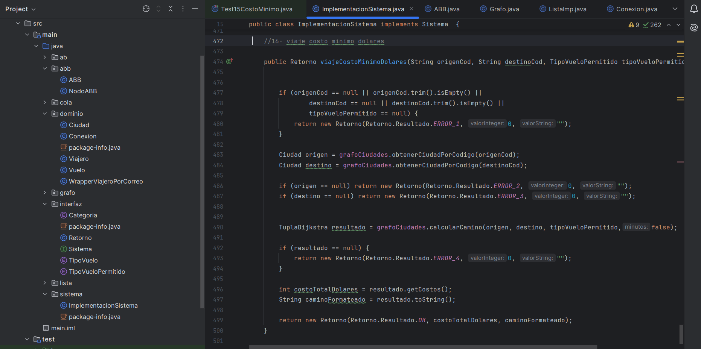
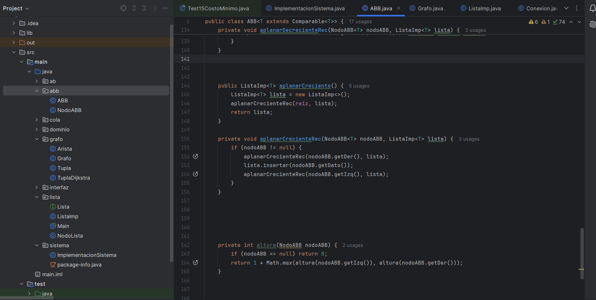
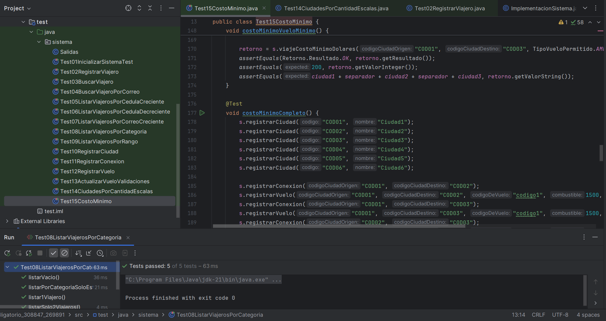
🍽️ Restaurant Order Management System
Desktop application developed in Java with NetBeans to manage restaurant orders. Customers can select menu items, add custom comments, and confirm orders, while the system automatically calculates totals and applicable discounts. The system follows object-oriented principles such as Polymorphism, State, Strategy, Expert, and a clear layered architecture (UI, Controllers, Logic).
Besides the client interface, the system includes a specific interface for managers, who receive confirmed orders, process them by marking as "prepared" and then as "delivered". This provides full control of the workflow from order to delivery.
Technologies and Concepts Used:
- Java + Swing: Desktop GUI with event handling and interactive forms.
- NetBeans IDE: Organized in packages and event-driven development.
-
Polymorphism:
Implemented with
StateandStrategypatterns for discounts and customer types. -
Expert Pattern:
Business logic encapsulated in expert classes like
ManagerandOrder. - Layered Architecture: Separation between UI, controllers, business logic, and mock data.
Key Features:
- Client login with number and password.
- Menu categorized by food types.
- Order placement with custom comments.
- Automatic total, discount, and benefits calculation based on customer type.
- Promotions applied dynamically.
- Manager interface: order processing and delivery tracking.
- Observer for real-time updates on kitchen units, managers, and order statuses.
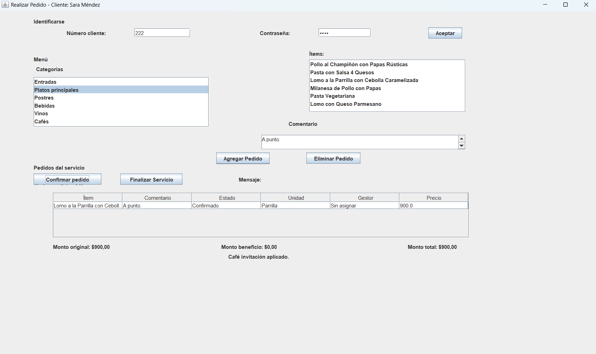
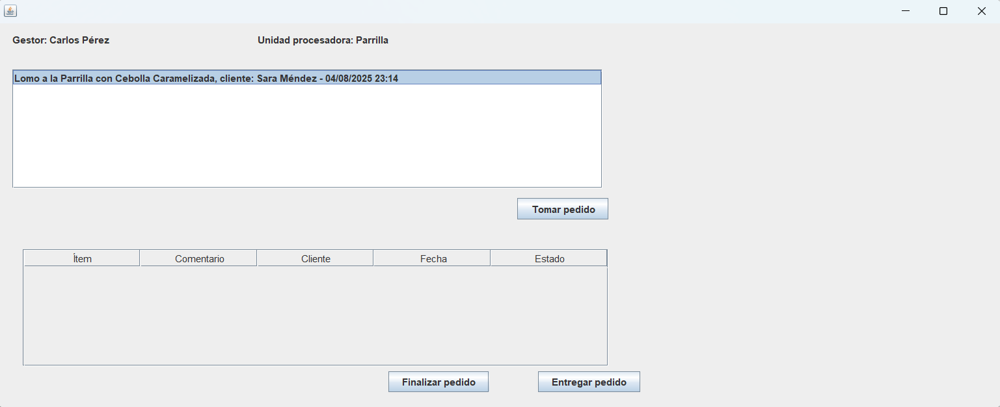
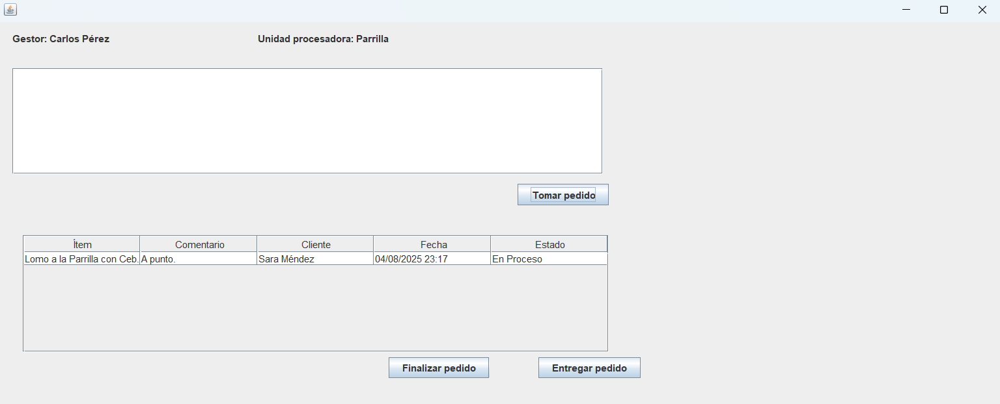